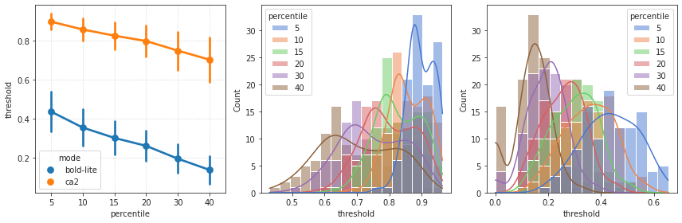

November ??th, 2021 (corr distributions)¶
Motivation: Dufferent approaches to sparsify
# HIDE CODE
import os
import sys
import nibabel as nib
import networkx as nx
from time import time
from pprint import pprint
from copy import deepcopy as dc
from os.path import join as pjoin
from myterial import orange, blue_grey
from IPython.display import display, IFrame, HTML
from matplotlib.colors import rgb2hex, to_rgb
import matplotlib.pyplot as plt
import seaborn as sns
# set style & no interpolalation
import matplotlib
matplotlib.rcParams['image.interpolation'] = 'none'
sns.set_style('whitegrid')
%matplotlib inline
# tmp & extras dir
git_dir = pjoin(os.environ['HOME'], 'Dropbox/git')
tmp_dir = pjoin(git_dir, 'jb-Ca-fMRI/tmp')
extras_dir = pjoin(git_dir, 'jb-Ca-fMRI/_extras')
lfr_dir = pjoin(os.environ['HOME'], 'Documents/workspaces/lfr/binary_overlapping')
# GitHub
sys.path.insert(0, pjoin(git_dir, '_Ca-fMRI'))
from register.atlas import make_tree_graph
from register.parcellation import Parcellation
from analysis.hierarchical import Hierarchical
from analysis.fourier import *
from analysis.bootstrap import *
from analysis.svinet import *
from analysis.group import *
from analysis.lfr import *
from utils.render import *
from utils.plotting import *
from model.mouse import Mice
from model.configuration import Config
# warnings
import warnings
warnings.filterwarnings('ignore', category=DeprecationWarning)
# HIDE CODE
def show_corrs(key):
try:
net_ca = Network(mice, key, 'ca2').load_network()
net_bold = Network(mice, key, 'bold-lite').load_network()
except TypeError:
return
fig, axes = create_figure(2, 4, (12.8, 6))
for i, _net in enumerate([net_bold, net_ca]):
xl = _net.adj[_net.l_ids][:, _net.l_ids]
xr = _net.adj[_net.r_ids][:, _net.r_ids]
vmin = np.min(_net.adj)
vmax = np.max(_net.adj)
j = 2 * i
im = axes[0, j].imshow(xl, vmin=vmin, vmax=vmax, cmap='Spectral_r')
plt.colorbar(im, ax=axes[0, j], shrink=0.75)
axes[0, j].set_title(f"{_net.mode} (left hemis)")
j = 2 * i + 1
im = axes[0, j].imshow(xr, vmin=vmin, vmax=vmax, cmap='Spectral_r')
plt.colorbar(im, ax=axes[0, j], shrink=0.75)
axes[0, j].set_title(f"{_net.mode} (right hemis)")
j = 2 * i
sns.histplot(
data=xl[xl.nonzero()],
label='left hemis',
stat='percent',
color='C0',
bins=30,
alpha=0.7,
ax=axes[1, j],
)
sns.histplot(
data=xr[xr.nonzero()],
label='right hemis',
stat='percent',
color='C3',
bins=30,
alpha=0.7,
ax=axes[1, j],
)
axes[1, j].set_xlabel('correlation')
axes[1, j].set_title(f"{_net.mode} corr hist")
axes[1, j].legend()
j = 2 * i + 1
sns.ecdfplot(
data=xl[xl.nonzero()],
label='left hemis',
color='C0',
lw=2,
ax=axes[1, j],
)
sns.ecdfplot(
data=xr[xr.nonzero()],
label='right hemis',
color='C3',
lw=2,
ax=axes[1, j],
)
axes[1, j].set_xlabel('correlation')
axes[1, j].set_title(f"{_net.mode} corr ecdf")
axes[1, j].legend()
axes[1, j].grid()
fig.suptitle(key, fontsize=15, y=1.03)
plt.show()
return (net_ca, net_bold), (fig, axes)
mice = Mice((100, 3))
dlist = []
for key, (sub, ses, run) in tqdm(mice.looper.items()):
if run == -1:
continue
try:
net_ca = Network(mice, key, 'ca2').load_network()
net_bold = Network(mice, key, 'bold-lite').load_network()
except TypeError:
continue
if net_ca is None or net_bold is None:
print(key)
continue
dlist.append({
'mode': ['bold-lite'] * len(net_bold.thresholds),
'percentile': net_bold.thresholds.keys(),
'threshold': net_bold.thresholds.values(),
})
dlist.append({
'mode': ['ca2'] * len(net_ca.thresholds),
'percentile': net_ca.thresholds.keys(),
'threshold': net_ca.thresholds.values(),
})
df = pd.DataFrame(merge_dicts(dlist))
df
| mode | percentile | threshold | |
|---|---|---|---|
| 0 | bold-lite | 40 | 0.000000 |
| 1 | bold-lite | 30 | 0.000000 |
| 2 | bold-lite | 20 | 0.113425 |
| 3 | bold-lite | 15 | 0.134509 |
| 4 | bold-lite | 10 | 0.163735 |
| ... | ... | ... | ... |
| 1315 | ca2 | 30 | 0.780328 |
| 1316 | ca2 | 20 | 0.830381 |
| 1317 | ca2 | 15 | 0.857756 |
| 1318 | ca2 | 10 | 0.890479 |
| 1319 | ca2 | 5 | 0.924480 |
1320 rows × 3 columns
fig, axes = create_figure(1, 3, (12, 4))
sns.pointplot(
data=df,
x='percentile',
y='threshold',
hue='mode',
ci='sd',
ax=axes[0],
)
axes[0].grid()
sns.histplot(
data=df.loc[df['mode'] == 'ca2'],
x='threshold',
hue='percentile',
palette='muted',
kde=True,
ax=axes[1],
)
sns.histplot(
data=df.loc[df['mode'] == 'bold-lite'],
x='threshold',
hue='percentile',
palette='muted',
kde=True,
ax=axes[2],
)
plt.show()

key = 'sub-SLC02_ses-1_run-1'
net_ca = Network(mice, key, 'ca2').load_network()
net_bold = Network(mice, key, 'bold-lite').load_network()
net_ca.thresholds
{ 40: 0.8450426594605256, 30: 0.8759989215906099, 20: 0.9083186977091098, 15: 0.9239549225675179, 10: 0.9406541601525573, 5: 0.9601491197708341 }
net_ca.fit_network(force=True)
[PROGRESS] fit: initiated
[PROGRESS] graphs: done
[PROGRESS] fit: done!
<analysis.network.Network object at 0x7f571b0a29d0>
net_ca.thresholds
{ 40: 0.8450426594605256, 30: 0.8759989215906099, 20: 0.9083186977091098, 15: 0.9239549225675179, 10: 0.9406541601525573, 5: 0.9601491197708341 }
plt.imshow(net_ca.adj, vmin=net_ca.thresholds[10])
<matplotlib.image.AxesImage object at 0x7f571876e910>
plt.imshow(net_ca.adjacencies[15][net_ca.l_ids][:, net_ca.l_ids])
<matplotlib.image.AxesImage object at 0x7f5713ab3df0>
plt.imshow(net_ca.adjacencies[15][net_ca.r_ids][:, net_ca.r_ids])
<matplotlib.image.AxesImage object at 0x7f5713a07f40>
net_bold.percentiles
[40, 30, 20, 15, 10, 5]
net_bold.thresholds
{ 40: 0.1555884709020803, 30: 0.20318122177646583, 20: 0.2594416760111986, 15: 0.28984905369124037, 10: 0.3298057204233855, 5: 0.38766077982369396 }
net_ca.thresholds
{ 40: 0.8450426594605256, 30: 0.8759989215906099, 20: 0.9083186977091098, 15: 0.9239549225675179, 10: 0.9406541601525573, 5: 0.9601491197708341 }
def calculate_threshold(a: np.ndarray, d: float, verbose: bool = False):
nonzero = np.abs(a).mean(0) > 0
adj_eff = a[nonzero][:, nonzero]
y = sp_dist.squareform(adj_eff)
thres = np.quantile(y, 1 - d)
if verbose:
adj_eff[adj_eff <= thres] = 0.
g = nx.from_numpy_matrix(adj_eff)
msg = f"threshold = {thres:0.2f}\t/\t"
msg += f"density: requested = {d:0.5f}, "
msg += f"result = {nx.density(g):0.5f};\n"
print(msg)
return thres
thres = calculate_threshold(net_ca.adj, 0.1, True)
threshold = 0.94 / density: requested = 0.10000, result = 0.10009;
absolute = {}
density = {}
for key in mice.ca:
net = Network(mice, key, 'ca2').load_network()
import numpy as np
a = np.random.randn(5, 5)
a[2, 1] = np.nan
a[1, 2] = np.nan
a
array([[-0.00645646, -0.17019593, -1.87470188, -0.88509066, 0.09730551],
[-0.58407081, -0.89691808, nan, 1.15998941, -0.54923731],
[ 0.89802193, nan, 0.6256201 , -1.21897026, -0.03802815],
[ 0.14949707, -0.56788475, 0.36002183, -0.72363344, -1.30580543],
[-0.11199424, 0.53428264, -1.41687949, 0.80862303, 0.31099497]])
nonzero = np.abs(a).mean(0) > 0
nonzero
array([ True, False, False, True, True])
np.nanmean(np.abs(a), 0)
array([0.3500081 , 0.54232035, 1.06930582, 0.95926136, 0.46027427])